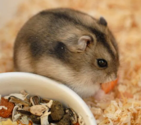

햄스터

일단 햄스터의 쳇바퀴는 크면 클수록 좋다.
되도록이면 좌측 녹색 쳇바퀴를
구비해주는게 가장 좋지만 상황이 어여치
않다면 최소 크기의 쳇바퀴라도 구비해줘야한다.
참고로, 골든 햄스터는 무조건 좌측 쳇바퀴를 구비해줘야한다.
또한 만약 쳇바퀴를 구비해줬는데도
햄스터가 허리가 굽으려 진채 쳇바퀴를 탄다면 더 큰것으로 장만 해줘야한다.
또한 절대로 쳇바퀴를 빼면 안된다.
시끄러워서 잠을 못자겠다, 등의
이유로 빼려 한다면 당신은 햄스터의 유일한 생존수단을 햄스터에게서 뺏는 것이다.
아크릴 쳇바퀴의 경우 베어링에서 나는 소음은 거의 없다.
하지만 쳇바퀴 자체가 무거워서 어린 햄스터나 나이든 햄스터가 버거워하는 경우가 많으며, 표면이 미끄러워서 특히 발에 털이 있는
드워프/로보로브스키 햄스터에게 썩 적합하지 않다.
미끄럼방지 골판지를 붙이라고 팔기도 하는데, 이것을 쓰다가 발바닥에 열상을 입는 경우가
있으니 쓰지 않도록 한다.
골든 햄스터는 최소 189L 케이지 이상의 케이지를 구비해줘야한다.
이것도 골든 햄스터에게는 작은 격이라 길이가
120cm,높이,가로가 50cm 정도 되는 케이지를 구비해줘야한다.
드워프 햄스터와 로보로브스키 햄스터는 최소 120L 케이지 이상의 케이지를
구비해야한다.
하지만 정형 행동을 보인다면 189L 케이지로 바꾸어줘야 한다.
혼합사료 : 펠렛, 익스, 각종 견과류, 각종 알곡, 옥수수, 밀웜 등등이 섞여있는 사료.
가장
일반적인 햄스터 사료로
햄스터 입장에서도 골라먹는 재미가 있기 때문에 사용하기 적합하다.
단점으로는 어느 햄스터나 예외없이 편식을 하기 때문에 포장지에 적혀 있는
영양비가 제대로 지켜진다는 보장이 없다.
이유식 : 딱딱한 사료를 먹지 못하거나, 특별히 영양보충이 필요할 때 혹은 펠렛 등의 기호도가 낮은 사료를 먹이기 위해 쓰는 방법이다.
수제로 건조 닭고기, 건조 과일, 건조 야채, 견과류 등과 함께 갈아준 후 물에 개어서 만들어도 되고... 물에
타서 바로 먹일 수 있는 완제품도 구할 수 있다.
그 외 해바라기씨, 땅콩, 밀웜, 치즈 등도 대부분의 햄스터가 좋아하는 먹이들이지만, 이것들은
지방 함량이 높은 것들이라 자주 주거나 이런 것들만 주구장창 줘버릇 하다 보면 비만이 되어버린다.
거의 모든 햄스터가 이 먹이들에 환장한다.
하루에 한 번씩 햄스터 몸무게의 12%를 계량해서 밥통에 부어주면 된다.
비만하지 않고 편식이 적은 햄스터라면 그냥 왕창 부어두고 자율적으로
급여하기도 한다.
간식은 전체 급여량이 1할이 넘지 않는 것이 좋다.
이런것들 말고 자연간식 위주로 추천한다.
햄스터는 야생에서 굴을 파며 다니기 때문에 기본적인 습성을 만족시켜주고, 스트레스 관리를 위해서
케이지 전체 베딩은
필수적이다.
햄스터는 야생에서 거의 모든 동물이 천적이였다.
따라서 숨는 걸 굉장히 좋아하는 동물이다.
그렇기에 최소 3~4개 이상의 빛이
안들어오는 은신처를 케이지에 구비 해주어야한다.
아래 항목의 사육법을 보면 알 수 있듯이 햄스터는 자기만의 영역을 갖고 생활하는 동물이며 그
중에서도
골든햄스터는 철저한 영역동물 이라서 햄스터 한 마리에 케이지 하나가 절대적으로 지켜져야 한다.
햄스터는 대체로 독립적인 생활을 하기 때문에
사람과의 정을 느낄 수 없다.
하지만 보통 핸들링을 통해 햄스터와 친해졌다고 하는데, 핸들링은 대개로 간식을 주면서 하므로 햄스터가 간식을
주는 손을 친근하고 익숙하게 느끼는 것이지 사람과 친해진다는 것은 아니다.
독립적인 생물인 만큼 햄스터를 키울 때 무턱대고 만져서는 절대 안
된다.
그렇게 하다 햄스터가 스트레스를 받아 수명에 지장이 생길수도 있다.
다른 반려동물과는 가급적 같은 공간을 사용하지 말아야 한다.
 설치류
설치류 어류
어류 조류
조류 파충류
파충류 포유류
포유류